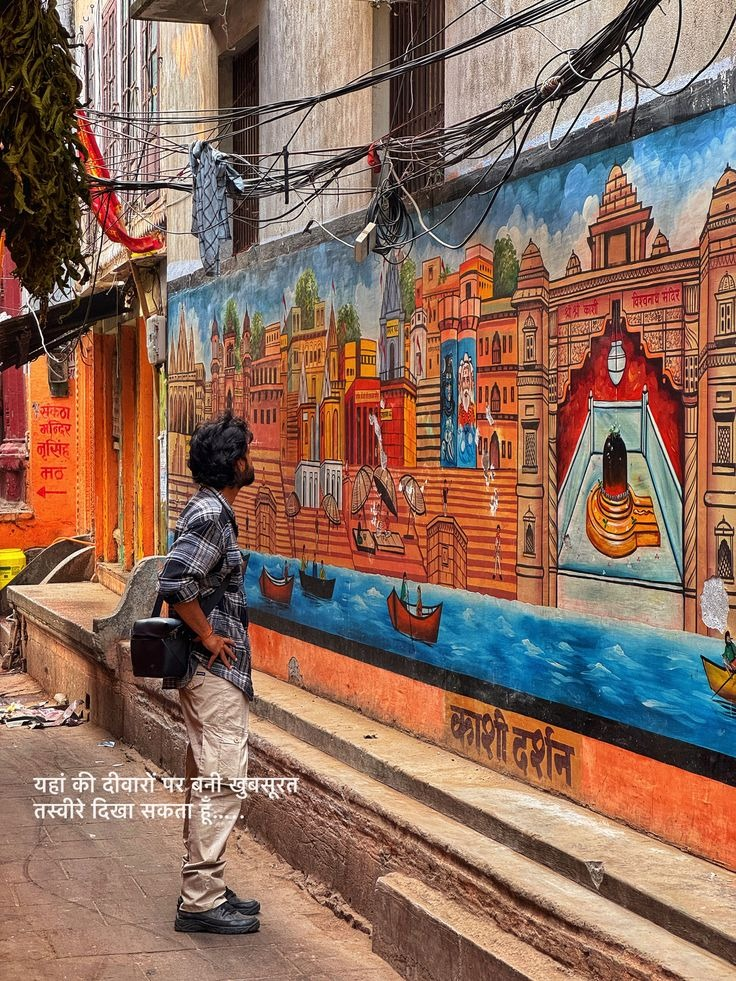
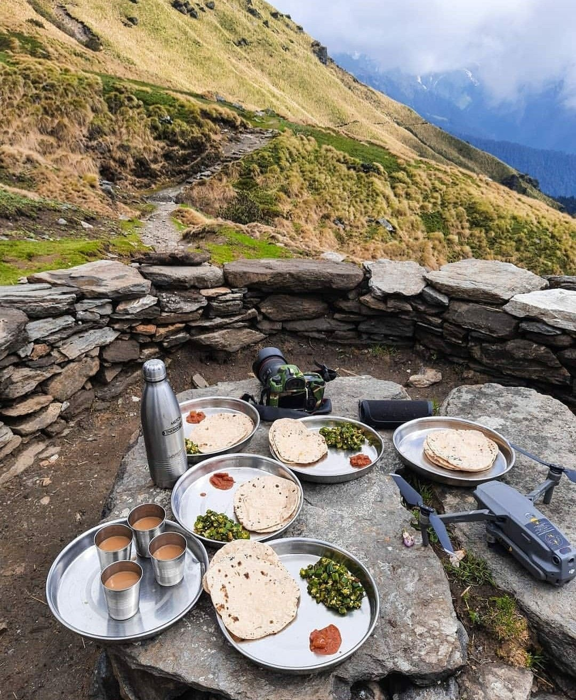
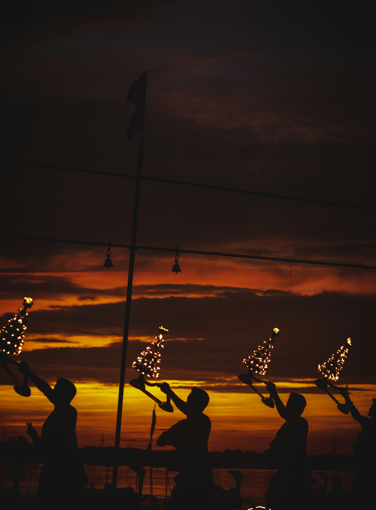
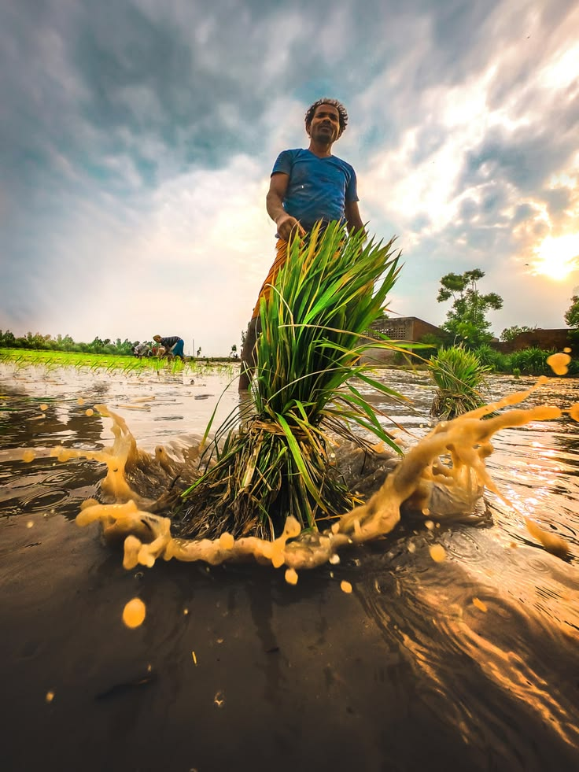

Every Variyam experience is designed with intention — combining cultural depth, structured learning, and authentic local engagement. Choose a journey crafted for your purpose.
Spend time with self-help groups, artisans, and farmers — and return with insights no boardroom can offer.
Field-based learning in empathy, sustainability, rural entrepreneurship, and social innovation.
Walk through the lanes of Varanasi, witness ancient crafts, rituals, and timeless local stories.
Explore organic farming, turmeric processing, weaving traditions, and local livelihoods.
Slow travel, homestays, community immersion, and journeys with meaning.

Experience sunrise at Assi Ghat, Ganga Aarti, temple stories, and peaceful spiritual journeys.
Explore
Savor Varanasi's iconic street food, from kachori to lassi, and discover the city's vibrant culinary culture.
Explore
Walk through old lanes, artisan communities, music, and untold local stories.
Explore
Live with local communities, understand their way of life, and experience authentic village culture.
Explore